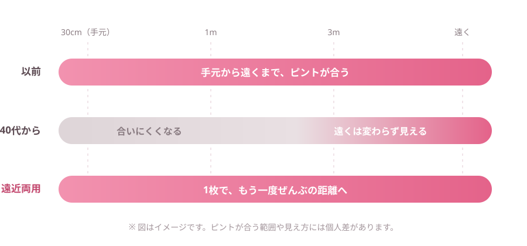
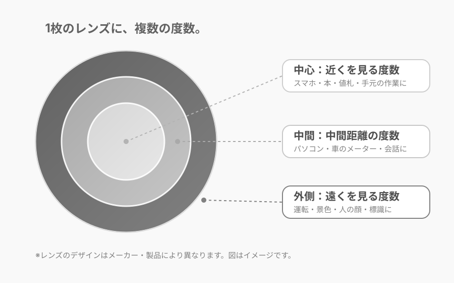
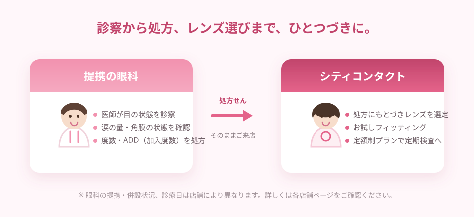
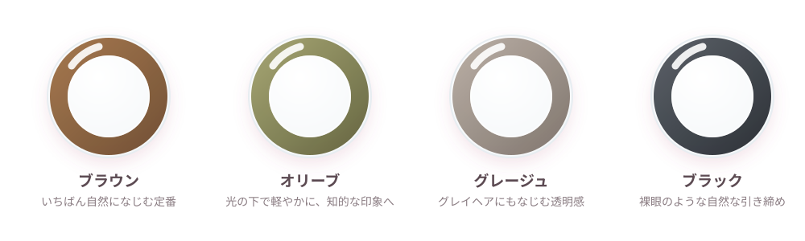

大人の瞳を快適に。
見えるって、こんなに
見えるって、こんなに
人生を変える。
クリアに見える感動と、一日中ずっと快適な付け心地を。
あなたの毎日に、もっと明るい笑顔と自由を届けます。
レンズを変えたら、人生の解像度が上がった。
- 全店 眼科併設
- 無料視力チェック実施中
- お試しフィッティング
コンタクトあり
裸眼
同じ場所なのに、
世界が違う。
SCENE
見えることで、
見えることで、
日常が変わる瞬間を。
仕事も、家族との時間も、お出かけも。
「クリアな視界」と「一日中ずっと快適な付け心地」は、毎日のこんな場面で効いてきます。
見えるって、こんなに
その小さな笑顔も、
見逃さない。
朝から晩まで、
景色も表情もクリアに。
目の前の仕事に、
夕方まで没頭できる。
自信を持って、
もっと笑顔になれる。
ゴールも、目標も、
もっと鮮明に。
CHECK
突然ですが、
突然ですが、
あなたの目は何歳？
当てはまるものをチェックしてみてください。
- ✓目が乾きやすい
- ✓夜になると見えにくい
- ✓長時間つけていると疲れる
- ✓レンズがゴロゴロする
- ✓スマホの文字を、つい遠ざけて読んでいる
- ✓薄暗いお店で、メニューの文字が読みづらい
- ✓パソコンと書類を行き来すると、目が疲れる
- ✓値札やレシートの小さい数字が、ぼやける
BEFORE / AFTER
たった5秒で、
たった5秒で、
世界はこんなに変わる。
1枚のレンズの中に、遠く用・中間用・近く用の度数を配置。視線を動かすだけで、遠くも近くも自然に見えるように設計されたレンズです。
スイッチを押して、手元の見え方の違いをお確かめください。
ぼやけて見えにくい、
その毎日を変える。
40代を過ぎるころから、目のピント調節力は少しずつ変化します。遠くがよく見えるレンズほど、 手元はぼやけて感じられるもの。だからといって手元用のメガネを重ねるのは、 見た目にも、手間にも、小さなストレスが積み重なります。
遠近両用レンズなら、1枚で遠くも近くも。
見た目はいつものコンタクトレンズとまったく同じです。
変わるのは、あなたに見えている世界だけ。


シティコンタクトが選ばれる理由
SAFETY
大人の目は、
大人の目は、
思っているよりデリケート。
年齢とともに、涙の量は少しずつ減っていきます。乾きやすくなった目に合わないレンズを使い続けると、
見えにくさだけでなく、目のトラブルにつながることも。
だからシティコンタクトは、全店 眼科併設です。

01
医師の診察のもとで処方
遠近両用レンズは、遠くの度数に「加入度数（ADD）」を組み合わせる繊細な処方が必要です。目の状態を診たうえで決めるから、無理のない見え方に近づけます。
02
涙・角膜の状態まで確認
涙の量が減ると、レンズの装用感も見え方も変わります。目の乾きやすさまで確認したうえで、素材やタイプをご提案します。
03
トラブルを未然に防ぐ
自己判断でのレンズ選びは、目に負担をかけることも。定期検査までセットでお受けいただけるから、長く安全にお使いいただけます。
04
「疲れない」レンズ選びへ
見えるだけでなく、疲れないことまで。生活のどの距離を優先したいかをうかがい、度数のバランスを合わせていきます。
目の状態を確かめないままレンズを選ぶことに、不安はありませんか。
見え方が変わりはじめた大人の目こそ、診てもらう安心を。
※ 眼科の診療日・診療時間は店舗により異なります。詳しくは各店舗ページをご確認ください。
COLOR
いつまでも若々しく。
いつまでも若々しく。
大人のための遠近両用カラコン。
眼科での処方だからこそ、トラブルなく安全に。
見え方をととのえながら、お顔の印象まで明るくするカラーレンズという選択です。
遠近両用レンズの、その先へ
「若く見えるね」の理由は、
「若く見えるね」の理由は、
言わないでおく。
年齢を重ねると、瞳の輪郭はやわらぎ、白目の透明感も少しずつ変化します。 遠近両用カラコンは、ごく自然な着色で輪郭をととのえ、 顔全体の印象をやさしく引き上げてくれます。
- 手元も遠くも見えて、目元の印象までワンランクアップ
- 「盛る」より「ととのえる」。大人のためのナチュラル発色
- グレイヘアや落ち着いたメイクにもなじむ色設計
- 眼科で目の状態を診たうえでの処方だから、安心して楽しめる

年代とお悩みに合わせて、2つのご提案。
遠近になった日が、
カラコン卒業の日じゃなくていい。
近くが気になりはじめても、好きな瞳はそのままで。
見え方も、カラコンのおしゃれもあきらめない。
- こんな方に
- スマホの見すぎで、夕方になると手元がぼやける。今のカラコンは気に入っている。
- ご提案
- ごく弱い加入度数（ADD +0.75D／+1.00D）を加えた、夕方の疲れ目をリセットするサポートレンズ。今のケア習慣のまま切り替えられます。
- 製品例
- アイコフレ マルチステージ ほか
ピントは合うのに、
メイクが映えない日がある。
大人の目元に、ブラウンの輪郭を。
見え方も、メイク映えもあきらめない。
- こんな方に
- すでに遠近両用レンズを使用中。写真やお出かけのとき、目元の印象が少し気になる。
- ご提案
- しっかりした加入度数（ADD +2.00D）はそのままに、目元の印象をととのえる「お出かけ用のプレミアムレンズ」。
- 製品例
- スマートフォーカスリング ブラウン ほか
※ 製品名は一例です。お取り扱い・度数の設定は店舗および製品により異なります。処方は眼科の検査結果にもとづきます。
VOICE
使ってよかった！の声、続々。
「長時間つけても快適で、仕事に集中できるようになりました。」
「スポーツの時もズレにくく、視界がとてもクリア！」
「目の乾きが減って、毎日がラクになりました。」
※ 掲載内容は個人の感想です。見え方・使い心地には個人差があります。
MOVIE
動画でわかる、
動画でわかる、
はじめての遠近両用レンズ。
文字だけではわかりにくい「見え方の慣れ方」や「つけ外しのコツ」を、動画でご説明します。
はじめてのコンタクトレンズ
（遠近両用レンズ編）
動画は準備中です
- 遠近両用レンズは、どう見えるの？
- 慣れるまでの期間と、慣れ方のコツ
- つけ外しの手順とお手入れ
- 眼科での検査は、どんなことをするの？
無料視力チェック 実施中！
あなたの毎日を、
もっとクリアに。
全店眼科併設のシティコンタクトなら、検査からレンズ選びまで一度のご来店で。
お試しフィッティングで、遠近両用レンズの見え方を実際にご体験いただけます。
ご相談・視力チェックは無料です。
STEP1
ご予約
お電話または店舗ページからご予約ください。ご予約なしでもご来店いただけます。
STEP2
併設眼科で検査・処方
視力だけでなく、涙の量や角膜の状態まで確認。加入度数（ADD）を決めていきます。
STEP3
お試しフィッティング
実際に装用して見え方を確認。「どの距離を優先したいか」をうかがいながら合わせます。
STEP4
ご購入・定期検査
定額制プランもご用意。装用後の調整や定期検査まで、続けてサポートします。
0120-103-664
無料視力チェック・お試しフィッティングのご予約
受付時間 9:30〜18:00（日・祝を除く）
受付時間 9:30〜18:00（日・祝を除く）
店舗をさがして予約する
福岡・佐賀・長崎・大分・熊本・鹿児島・山口・鳥取
メールでお問い合わせ
はじめての方はご利用の流れもご覧ください
コンタクトレンズは高度管理医療機器です。必ず眼科医の検査・処方を受けてお求めください。
使用前に添付文書をよく読み、正しくお使いください。定期検査は必ずお受けください。